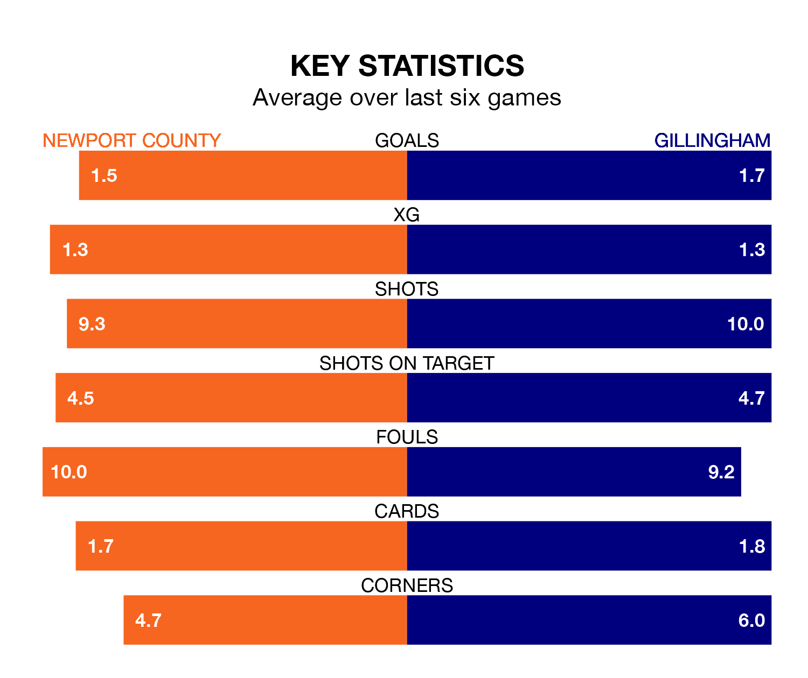

Gillingham travel to Newport County on Saturday in EFL League Two.
The visitors come into the game on the back of a draw in their last match, having tied with Swindon Town 2-2 at home, with goals from Connor Mahoney and Oliver Hawkins.
The Exiles, meanwhile, lost their last match, 3-1 against Notts County, with their goal scored by Will Evans.
In Will Evans, Newport have one of the league's sharpest shooters so far this season. He has notched 18 goals in 31 appearances, to sit third in the scoring charts.
Gillingham's top scorers, with five goals each, are Mahoney and Conor Masterson.
With 31 goals in 31 games so far this season, the Gills are the league's lowest scorers with 1.0 goals per game. But they are conceding fewer than average too, letting in 38 goals at a rate of 1.2 per game.
County, meanwhile, are average scorers, with 1.5 goals per game. They have conceded 1.6 goals per game.
The Exiles are in good form in EFL League Two, with four wins and a draw from their last six games.
With two wins and three draws over that period, the visitors' form is worse – they have taken nine points from 18, compared to the home side's 13.
In the last five years, Newport and Gillingham have played each other on four occasions. Newport won three of them and they drew once.
On average, the Exiles scored 2.0 goals and the Gills 0.8 in those matches.
Their last meeting was on October 28, when Newport won 2-0 away.
Gillingham are ninth in the table after 31 games, of which they have won 14 and drawn five, earning 47 points.
Newport are five places behind Gillingham in 14th, with 12 wins and seven draws putting them on 43 points.
Saturday's match will be refereed by Oliver Yates, who has taken charge of 10 EFL League Two games so far this season, issuing five red cards and booking 45 players. He has awarded three penalties.
He is yet to oversee a match featuring either Newport or Gillingham this season.
Updated: 13:04 (UTC), 16/02/24